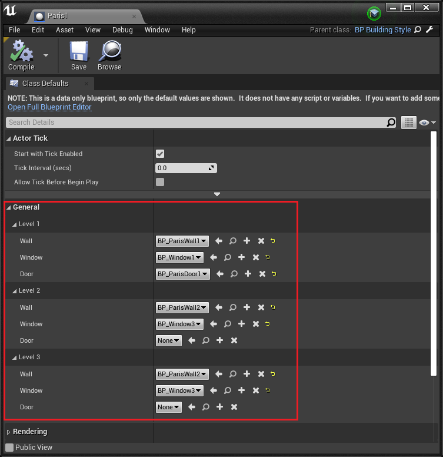
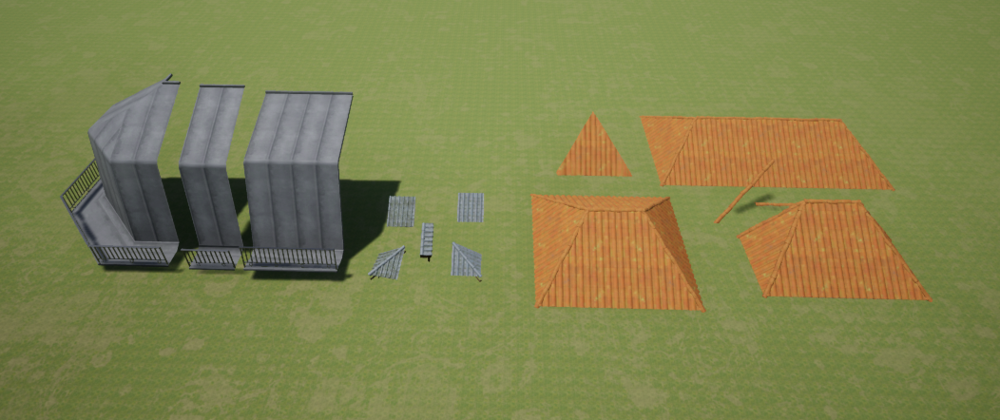

This week I worked on adding an easy way for storing and changing a building style and adding roof tiles
I wanted to add the idea of a building style to group walls/windows/doors that work together. I also wanted to be able to set the style instead of manually setting the meshes under every level. I originally thought about using a container to store all the similar meshes and then once the user picks a style they are given the option of selecting from the walls in that container and similarly for windows and doors. However, you still have to choose the meshes for every floor which I didn't like. I decided instead to make a class that decides the exact style of a building, the user picks chooses the exact wall/window/door (and later roof tiles and decorations) for every level.

In the building generator, the user can easily switch between the pre created styles. They can still choose the meshes for this instance without the style by choosing none for the style.
The second task I worked on is adding floor and roof tiles. Tile meshes have to have a center pivot, they are scaled to be a square where the width is the size of the current segment size.To generate the tile placements, I calculated the center of every grid cell in the grid for the maximum boundary. I then used a built in function in spline that gives you the closest point on the spline to a provided position. If the distance between the pivot of the building and the tile position is smaller than the distance between the building pivot and the closest point on the spline then that tile must be inside the spline perimeter. Floors use the spline of the floor under them (with the exception of the first floor) so that a "roof" closes all the building openings.
I'm thinking about changing the floor mesh parameter to a floor material instead and making all the floors a plane since some 3d meshes are going through the wall meshes.
Next week, I will be working on trying to add a more traditional roof and starting on the decorations like trims and corner details. I started to look at roof meshes to see how I can use them.
